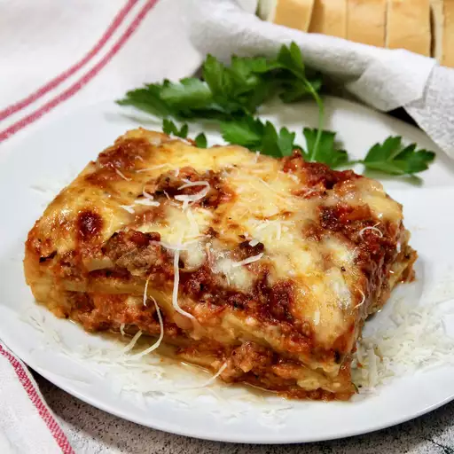

Lasagna

Description
Lasagna is a classic Italian dish consisting of layers of wide, flat pasta
sheets alternated with rich meat or vegetable sauce, creamy béchamel or
ricotta, and a generous topping of melted cheese. It's baked to
perfection, creating a hearty and comforting meal with a perfect balance
of flavors and textures. This beloved dish is often enjoyed as a
satisfying main course.
Ingredients
Meat Sauce:
- 1 lb ground beef
- 1 lb ground pork or Italian sausage
- 1 large onion, chopped
- 3 cloves garlic, minced
- 2 cans (15 oz each) tomato sauce
- 2 cans (6 oz each) tomato paste
- 1 can (15 oz) diced tomatoes
- 1/2 cup water
- 2 tablespoons sugar
- 2 teaspoons dried basil
- 1 teaspoon Italian seasoning
- 1 teaspoon salt
- 1/2 teaspoon black pepper
- 1/4 cup chopped fresh parsley
Cheese Mixture:
- 15 oz ricotta cheese
- 1 egg
- 1/2 teaspoon salt
- 2 tablespoons chopped fresh parsley
Assembly:
- 12 lasagna noodles
- 16 oz shredded mozzarella cheese
- 1 cup grated Parmesan cheese
Steps
Prepare the Meat Sauce:
Cook Meat and Onions:
-
In a large pot, cook ground beef, ground pork or sausage, and chopped
onions over medium heat until the meat is browned. Drain any excess
fat.
Add Garlic and Tomatoes:
-
Add minced garlic and cook for another minute. Stir in tomato sauce,
tomato paste, diced tomatoes, and water.
Season and Simmer:
-
Add sugar, dried basil, Italian seasoning, salt, pepper, and chopped
fresh parsley. Simmer on low for about 30 minutes, stirring
occasionally.
Prepare the Cheese Mixture:
Mix Ricotta Cheese:
-
In a medium bowl, combine ricotta cheese, egg, salt, and chopped fresh
parsley. Mix well until smooth.
Cook the Noodles:
Boil Lasagna Noodles:
-
Cook lasagna noodles according to the package instructions. Drain and
set aside.
Assemble the Lasagna:
Preheat Oven:
- Preheat your oven to 375°F (190°C).
Layer Ingredients:
-
Spread a thin layer of meat sauce in the bottom of a 9x13-inch baking
dish.
-
Place a layer of cooked lasagna noodles over the sauce and spread a
layer of the ricotta cheese mixture over the noodles.
-
Sprinkle a layer of shredded mozzarella cheese and grated Parmesan
cheese over the ricotta mixture.
-
Repeat the layers, ending with a layer of meat sauce topped with
mozzarella and Parmesan cheese.
Bake the Lasagna:
Cover and Bake:
-
Cover the baking dish with aluminum foil and bake in the preheated
oven for 25 minutes.
Uncover and Continue Baking:
-
Remove the foil and bake for an additional 25 minutes, or until the
cheese is bubbly and golden brown.
Serve the Lasagna:
Let it Rest:
-
Allow the lasagna to stand for 10-15 minutes before serving to let it
set.
Enjoy:
- Serve hot, optionally garnished with fresh basil or parsley.
Enjoy
Enjoy your delicious homemade lasagna!